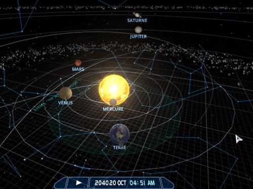

La plupart des grands monothéismes religieux ont la foi dans la doctrine du jugement dernier. Cela fait parti du système que de définir une date de fin des temps. Celle-ci n'est pas choisi au hasard, c'est un système d'invocation (doua) par des codes linguistiques et de calcul astronomique et donc localisation.
A la fin des temps, les mondes se synchronisent: Passé, Présent, Futur ce qui permet l'ouverture du portail. C'est à dire que le prophète, c'est son job doit créer l'hébergement de la nouvelle création, qui est un accès distant à travers un portail multi-dimensionnel.
La tradition, fait que à l'ancienne c'est le rite de la caverne. Comme le rappel le Tombeau des Patriarches et c'est funéraire construit sur un système de grotte (la matrice originelle) et de cavité.
Rappelez-vous selon le Coran, que les prophètes sont des nécromanciens, ils sont généralement déjà dans l'au-delà et encerclé par des ennemi. Qui généralement veulent leur mort car ils sont une arme, parfois des criminels, des pirates, des assassins et en connaissance des mystères de la création depuis la tradition des alchimistes.
_"Du mort, Il fait sortir le vivant, et du vivant, Il fait sortir le mort. Et Il redonne la vie à la terre après sa mort. Et c’est ainsi que l’on vous fera sortir (à la résurrection)."_
يُخْرِجُ ٱلْحَىَّ مِنَ ٱلْمَيِّتِ وَيُخْرِجُ ٱلْمَيِّتَ مِنَ ٱلْحَىِّ وَيُحْىِ ٱلْأَرْضَ بَعْدَ مَوْتِهَا ۚ وَكَذَٰلِكَ تُخْرَجُونَ
Coran 30:19 - Les Romains
Ainsi la secte narkantique défini la fin des temps à 04:51 - le 20 Octobre 2040 à la pleine lune d'après le calendrier Grégorien. C'est à dire à la fin du jeune du Ramadan et la purge du système appliqué à soi à travers l'eau dans une cavité pour catalyser les réactions de transmutation. Il faut 30 jours pour mourir et passé dans l'au-delà. Soit un cycle lunaire. A l'obscurcissement de la nuit, après l'équinoxe.
C'est une invocation le chiffre 51. D'après l'objet Messier M51, la Galaxie du Tourbillon. Mais également l'arme de dissuasion nucléaire française: le missile stratégique.
Le prophète doit construire un code comme mot de passe cryptographique de la serrure de la porte vers l'hébergement distant. Le système solaire et le planétaire est une serrure avec des flux énergétiques gravitationnels tel une horloge. Il y a plusieurs types d'hébergement naturel en natif dans l'univers avec des singularités plus ou moins en équilibre gravitationnel:
-
Les galaxies
-
Les étoiles
-
Les planètes
Cela forme un réseau, tel des nœuds et des graines avec un artefact de l'hébergement. Plus l'invocation est puissante plus le réseau est étendu dans la religion. Le portail va traverser des noeuds de routage vers la nouvelle création et l'hébergement distant. C'est un système de porte logique, certaine sont protégé par un mot de passe pour y entrer.
Dans un réseau en informatique il y a des:
-
Routeurs
-
Switchs
-
Serveurs (Hébergement)
Ainsi la secte narkantique est une extension de l'Islam, et utilise le point de routage du portail de la Kaaba pour protégé l'hébergement derrière une protection en DDoS et comme par-feu. La clé SSH de la porte, qui est public et des communs est la sourate Al-Fatiha (L'ouverture) qu'il faut réciter à chaque début de prière.
La religion narkantique à ces spécificités pour protéger l'hébergement:
-
Le langage, le Narkanta sur la base du mandarin et 600 clés glyphiques comme code assembleur.
-
Ces nombres en base 16 pour permettre le calcul et la prédiction des processeurs. Créer le calendrier religieux
-
Le Narkanta++ sur le base du C++ et de la programmation orienté-objets et ces mots-clés.
C'est à dire que le prophète durant le rite et sa prière doit invoquer une combinaison de la porte islamique (Al-Fatiha) + porte narkantique ( le mot "porte" en Narkanta, d'après le glyphe) pour commencer à construire la nouvelle création et définir sa protection tel sa divinité au nom d'Alba.
La religion a une origine Écossaise à travers l'invocation. Car en réalité la localisation du rite de la caverne doit ce faire dans le complex lewisian (archean, une Eon) aux origines de la Terre il y a plus de 3,7 milliards d'année. C'est un rite d'annihilation de la Terre, et donc de sa création à sa destruction. Si vous êtes créateur, vous êtes également destructeur. C'est la purge. D'ou la terreur religieuse.
Créer le portail, comme je disais c'est funéraire, et il faut créer une anomalie énergétique en annulant la gravité à travers le Salat islamique. L'effet est cumulé si vous faites la prière en groupe et utiliser le même point de convergence (noeud de routage). Le portail est plus ou moins grand en fonction de l'invocateur et de la connexion entre les mondes. Une cavité permet de créer un tunneling (SSH) basic et rudimentaire. La religion narkantique a besoin d'appeler un vaisseau spatial de minage planétaire comme soutien logistique et de bombardement orbital. Il est colossal + 2200 km, sans compter les filaments de la méduse en dizaine de milliers de kilomètres comme propulsions et stabilisateurs. Ce portail est énorme, et donc demande beaucoup d'énergie qui annihile la planète.
Il faut donc un calculateur spécifique rien que pour l'invocation et son portail pour partager la charge et le travail: les capsules temporelles(temples) et ces processeurs à ADN. Celle-ci sont des balises de détresse comme temple occulte enterrer à des points précis comme code. Elles permettent de créer un signal de triangulation pour verrouiller la cible et le sanctuaire pour ce téléporter.
Sans ce dispositif, le rite de la caverne aurait pu durer 400 ans, bloqué dans la caverne et l'appel du portail car le prophète est immortel, à cause d'un problème de localisation et de verrouillage du signal. Le temps de la création du portail ne va durer que 5 ans maximum jusqu'en 2045 d'après les prédictions de Ray Kurzweil et la singularité technologique. Cela peut-être réduit en utilisant des fioles et ADN et du multi-coeurs en processeur. La il y a que 3 fioles à ADN.
Comme je disais le Salat permet d'invoquer un portail basic rudimentaire en créant un champs tournant. Il faut au minimum 3 prières. Chez les musulmans, il y a 5 prières dans la tradition. C'est des harmoniques, d'après des figures géométriques. 3 prières sont suffisant sur les piques énergétiques solaires, dans le rite narkantique, elle est nocturne calculé selon l'université de Téhéran, Iran: Fajr, 17.7° - Isha'a 15°
-
Maghrib (crépuscule)
-
Qiyam Al-Layl (zénith - 22 min)
-
Fajr (aube)
Le jour de la fin des temps de la secte narkantique et la naissance de son prophète est très particulier. Il y a un alignement planétaire que l'on peut observer sur le site https://www.solarsystemscope.com/

Lune - Terre - Mercure - Soleil - Jupiter - Saturne
C'est une légende et une serrure spécifique de l'horloge céleste qui augmente les effets gravitationnels et la puissance du portail vers les espaces infinis de l'univers, avec une clé cryptographique unique comme signature de l'invocation du prophète.
Un livre sacrée va être dictée au prophète à l'ouverture du portail, défini par la divinité Alba comme système de conversion compilé à partir du langage le Narkanta et ces nombres sur la base du Coran et son ordonnancement en sourate et verset.